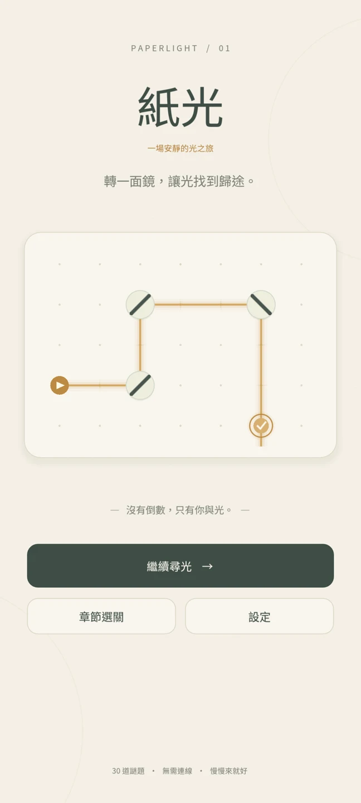
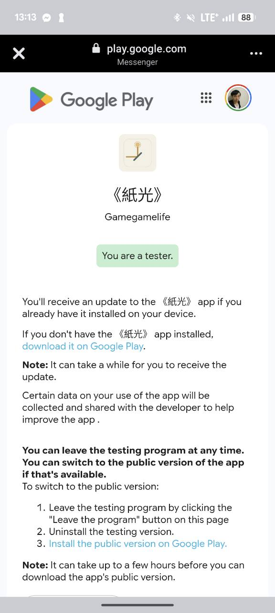
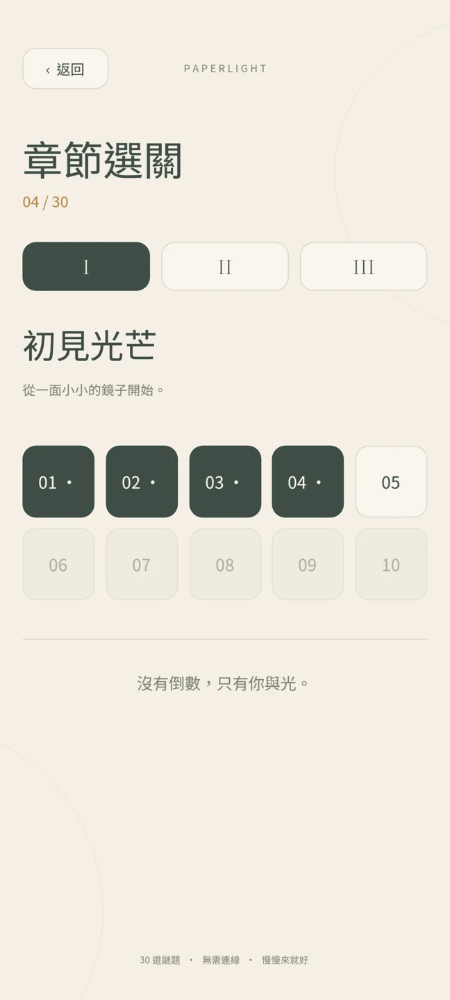
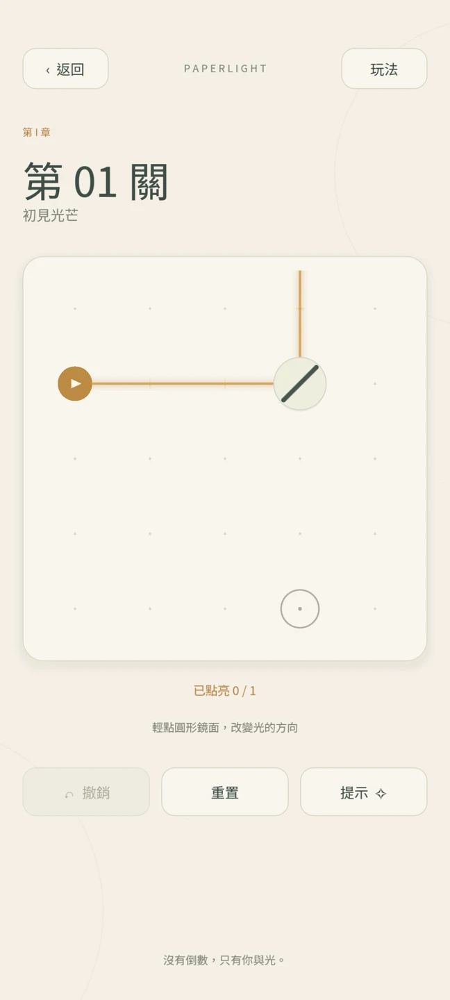
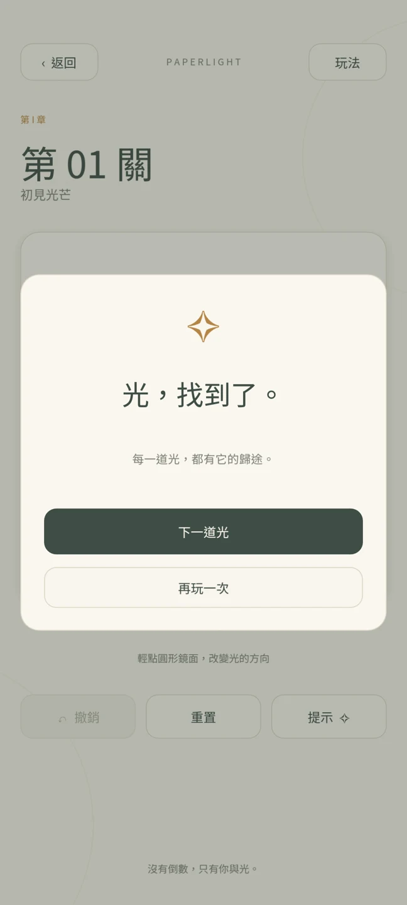

給親友的一封測試邀請
我做了一個小遊戲，
想邀你一起
讓光出發。
最近，我用 AI 做了《紙光》——
一款轉動鏡子、引導光線的安靜解謎遊戲。
現在正在 Google Play 封閉測試，
想找有 Android 手機的親友，幫忙試玩。

一起參加 / HOW TO JOIN
先把 Gmail 私訊給我，
再跟著這四步走。
請使用 Android 手機上 Google Play 登入的同一個帳號。
- 01
私訊你的 Gmail 給我
直接回覆傳這個網頁給你的我，告訴我你要參加，並附上 Gmail 電子郵件地址。我會把你加入測試名單。
只需要信箱地址，不需要密碼或驗證碼。
- 02
等我通知，再加入測試
收到我「已加入名單」的通知後，開啟下方測試連結，先登入你提供給我的 Gmail 帳號。
登入後，點選 Become a tester（成為測試人員）。等畫面顯示 You are a tester（你已成為測試人員），才表示成功加入，可以繼續到 Google Play 下載。
我把 email 加入名單後，你還需要自己按 Become a tester；只有登入 Gmail，還不算完成加入。
加入 Google Play 測試
成功加入後會看到「You are a tester」。接著點下方的「download it on Google Play」下載遊戲。 - 03
下載《紙光》，玩玩看
確認測試頁面已顯示 You are a tester 後，點選頁面上的 download it on Google Play，或使用下方按鈕前往 Google Play 安裝《紙光》。Google Play 也要使用同一個 Gmail 帳號。
前往 Google Play 下載 - 04
連續保留測試資格至少 14 天
這段期間請不要按「退出測試」。也請實際玩玩看，把遇到的問題、不順手的地方或感想直接傳給我；你的回饋會幫我把遊戲做好。
提供 Gmail 或只安裝遊戲，並不等於完成「加入測試」；記得先完成第 02 步。
先看看遊戲 / A LITTLE PREVIEW
轉一面鏡，讓光找到歸途。
30 道謎題、三個章節。沒有倒數，遊戲可離線遊玩，慢慢來就好。

從一面小小的鏡子開始
循著章節，一點一點解開光的謎題。

輕點一下，改變光的方向
讓金色光束找到目標，卡關時也有提示。

光，找到了。
完成一道謎題，再迎接下一道光。
你可能想問
參加前的小提醒。
為什麼需要 12 個人、14 天？
Google Play 要求符合條件的新個人開發者帳號，至少有 12 位測試人員連續加入封閉測試 14 天，才能申請正式發布資格。達標後仍需提交申請並由 Google 審核，不是第 14 天就自動上架。
查看 Google Play 官方說明 ↗只有 iPhone，可以幫忙嗎？
這次招募的是 Google Play 的 Android 測試人員，需要可使用 Google Play 的 Android 裝置。只有 iPhone 目前無法安裝這個版本，但歡迎把這份邀請轉給有 Android 手機的親友。
連結打不開，或顯示無法取得遊戲？
先確認我已把你加入名單，並檢查瀏覽器和 Google Play 是否登入你提供的同一個 Gmail。請先點選 Become a tester，確認顯示 You are a tester，再開啟下載連結；若仍無法使用，把畫面截圖傳給我，我來確認。
試玩時，要幫忙注意什麼？
看看是否能正常安裝、啟動，玩法說明是否容易理解，操作和關卡有沒有卡住。如果遇到閃退、畫面異常或不懂的地方，請直接私訊我，附上手機型號、問題描述及截圖就很有幫助。
謝謝你，陪這道光走第一段路。
願意幫忙的話，先把 Gmail 私訊給我。
等我加入名單，我們就可以開始了。